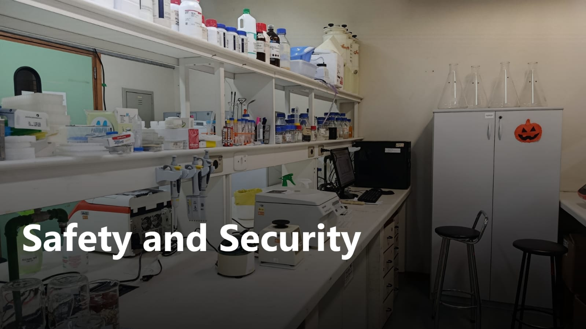

Safety and environmental responsibility guided our project from the start. Because our goal is to detect the herbicide 2,4-D in environmental samples, we prioritised a design that minimises the risks of using and releasing genetically engineered material, following a biocontainment-by-design strategy.
Identification of Potential Risks
We first mapped the risks inherent to the project. Three points required particular attention: the handling of 2,4-D itself, a chemical that demands appropriate protective equipment and storage; the use of genetically modified microorganisms, since the DNA templates that program the sensor are produced in transformed, non-pathogenic laboratory strains of Escherichia coli; and the possible release of engineered components during field use. These transformed strains are genetically modified organisms, so they are handled under laboratory containment and are never part of the final biosensor, which is cell-free. Identifying these risks early guided the design choices described below.
How We Address These Risks
Our biosensor runs on a cell-free expression system: instead of living cells, it uses only the molecular machinery needed for transcription and translation [1], [5]. When 2,4-D is present, a genetic network expresses a reporter protein that produces a measurable signal. Because the assay contains no living organism, it avoids the main hazards of conventional whole-cell biosensors while staying stable enough to be transported, stored, and used in the field [1], [2], [4]. Cell-free biosensors of this type have already detected herbicides such as atrazine and other water contaminants, confirming that the approach is effective and safe under realistic conditions [3], [4].
Key
features
No living genetically modified organisms are present in the final assay, which therefore cannot replicate or persist in the environment.
No pathogenic organisms, virulence factors, or toxins are involved at any stage.
Genetic components perform only sensing and reporting, with no selective advantage in the environment.
Greatly reduced risk of horizontal gene transfer.
Minimal environmental impact in the unlikely event of accidental release.
Aligned with iGEM safety principles through biocontainment by design.
Safety in Our Laboratory
All experimental work followed our institution's biosafety rules and Brazilian biosafety legislation (Lei nº 11.105/2005), regulated nationally by the National Technical Commission on Biosafety (CTNBio). Work with genetically modified organisms requires a Biosafety Quality Certificate (CQB) issued by CTNBio, and our activities were conducted in compliance with this requirement. The laboratory operates under CQB No. 060/98 (UFRGS), approved by CTNBio and published in the Brazilian Official Gazette (DOU) on 08/28/2018 (Technical Opinion No. 6,012/2018). At UFRGS, biosafety is overseen by the Internal Biosafety Commission (CIBio), linked to the Office of the Dean of Research (Pró-Reitoria de Pesquisa, PROPESQ), and laboratory practice follows the CIBio's Biosafety and Good Laboratory Practices Manual, which sets the standards for handling biological and chemical materials, using protective equipment, and following emergency procedures [6].
Biosafety training is provided at several levels. In the Biology and Biotechnology programs, containment and good laboratory practices are integrated into regular coursework and supervised internships. In addition, the university periodically offers mandatory internal biosafety training for staff, students, and researchers through the Office of Human Resources (Pró-Reitoria de Gestão de Pessoas, PROGESP). This includes a specific course on research with genetically modified organisms (GMOs), covering the Brazilian regulatory framework (CTNBio, CIBio, and the CQB), GMO risk classification and physical containment, and the transport and disposal of GMOs and chemical waste. Dedicated chemical waste-management training is also provided by the Institute of Chemistry, and every team member completed the applicable training before starting laboratory work.
Waste is segregated and discarded according to institutional guidelines: biological residues follow ANVISA rules, and chemical residues are routed through the UFRGS Chemical Waste Management Center (CGTRQ) [8]. Residues are identified and separated by chemical class at the point of generation, stored temporarily in suitable containers, and collected by the CGTRQ for treatment and final disposal, consistent with the chemical-safety practices adopted in UFRGS laboratories [7].
User Training and Safe-Use Guidance
To support safe use beyond the laboratory, we prepared a short user manual centred on operator and environmental safety. Because the assay is cell-free and contains no living organisms, the biological risk is minimal; the manual therefore focuses on the correct handling and storage of reagents, the use of basic protective equipment when collecting and applying samples, avoiding contact with the samples (which may contain the herbicide), and the proper disposal of used materials. You can find our user manual HERE.
Future Biosafety Considerations
Although cell-free systems already provide strong biocontainment, further development will focus on reagent stabilisation and on environmental risk assessment for field deployment. Evaluating the long-term stability of the biosensor under field conditions will help ensure it remains safe, reliable, and environmentally sustainable throughout its lifecycle.
References
[1] Green, T. P., Talley, J. P., & Bundy, B. C. (2025). Recent advances in developing cell-free protein synthesis biosensors for medical diagnostics and environmental monitoring. Biosensors, 15(8), 499. https://doi.org/10.3390/bios15080499
[2] Mendes, F., Machado, B. O., Castro, B. B., Sousa, M. J., & Chaves, S. R. (2025). Harnessing the power of biosensors for environmental monitoring of pesticides in water. Applied Microbiology and Biotechnology, 109, 92. https://doi.org/10.1007/s00253-025-13461-x
[3] Silverman, A. D., Akova, U., Alam, K. K., Jewett, M. C., & Lucks, J. B. (2020). Design and optimization of a cell-free atrazine biosensor. ACS Synthetic Biology, 9(3), 671-677. https://doi.org/10.1021/acssynbio.9b00388
[4] Jung, J. K., Alam, K. K., Verosloff, M. S., et al. (2020). Cell-free biosensors for rapid detection of water contaminants. Nature Biotechnology, 38(12), 1451-1459. https://doi.org/10.1038/s41587-020-0571-7
[5] Silverman, A. D., Karim, A. S., & Jewett, M. C. (2020). Cell-free gene expression: an expanded repertoire of applications. Nature Reviews Genetics, 21(3), 151-170. https://doi.org/10.1038/s41576-019-0186-3
[6] Universidade Federal do Rio Grande do Sul (UFRGS), Comissão Interna de Biossegurança (CIBio). Manual de Biossegurança e Boas Práticas de Laboratório. Porto Alegre: UFRGS, 2015. https://www.ufrgs.br/cbiot/wp-content/uploads/2017/10/CIBio_UFRGS-Manual-de-Biosseguran%C3%A7a-BPL-2015_11_03.pdf
[7] Universidade Federal do Rio Grande do Sul (UFRGS), Instituto de Química (COSAT). Manual de Segurança em Laboratórios. Porto Alegre: UFRGS. http://www.iq.ufrgs.br/cosat/images/manual_seguranca.pdf
[8] Universidade Federal do Rio Grande do Sul (UFRGS), Instituto de Química, Central de Gerenciamento e Tratamento de Resíduos Químicos (CGTRQ). Gestão de Resíduos Químicos. Porto Alegre: UFRGS, 2022. http://www.iq.ufrgs.br/cgtrq/images/Gesto-de-Resduos-Qumicos-red.-2022.pdf